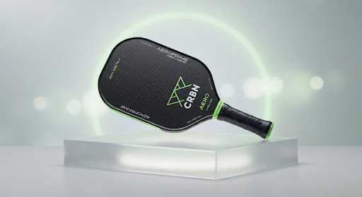

🎬 教学 · 入门
03:45
匹克球基础入门：掌握合法发球姿势与底线落点深度
详细拆解下手发球高度低于腰部、拍头朝下规则与弧线过网手法。
L
Coach Leo
找到 12 条与「发球」相关的内容
详细拆解下手发球高度低于腰部、拍头朝下规则与弧线过网手法。
严禁弹地旋转发球？双反弹区在发球局的防守站位图解。

微磨砂T700表面提供出色咬球摩擦力，发球下沉速度提升18%。
4片室内防滑地胶，独立发球多球训练机，新手友好。
已加载全部 12 条结果 · 没有更多了